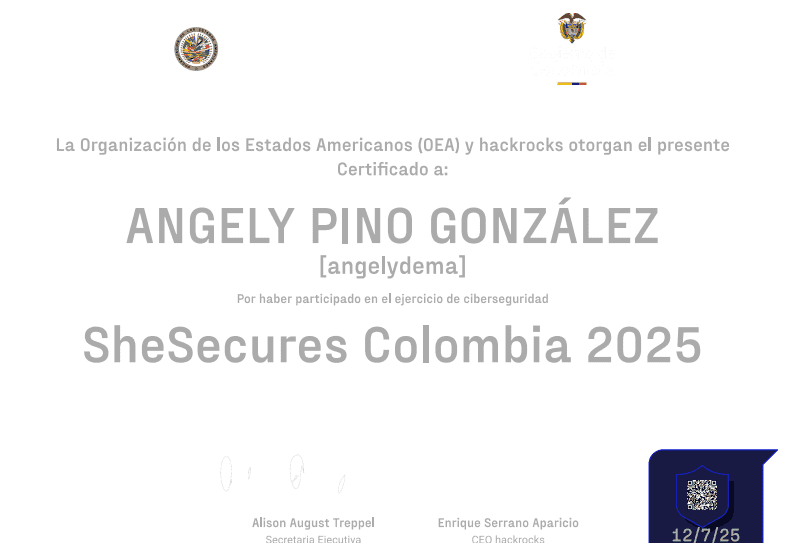
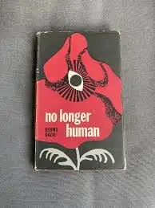
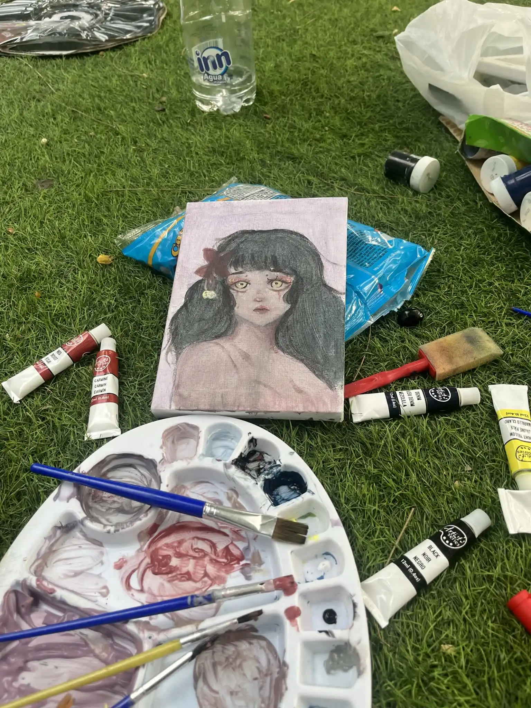
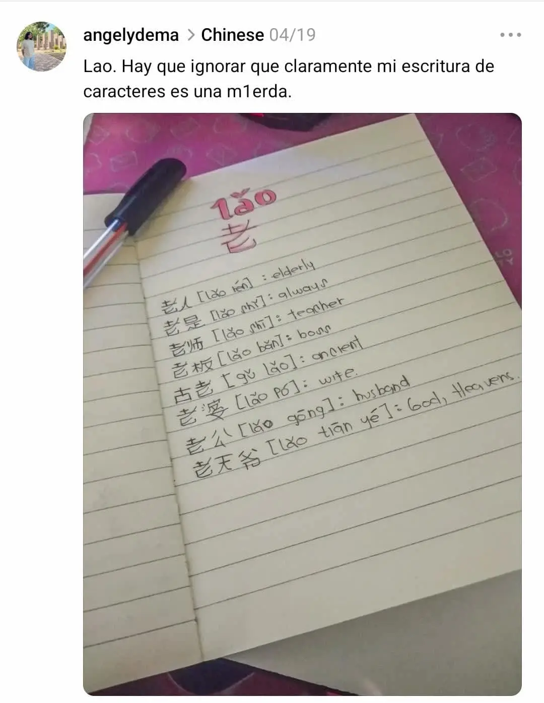

Who am I?
Hi, my name is Angely. I am a Systems Engineering student at Francisco de Paula Santander University in Colombia. I am particularly interested in web development, cybersecurity, and data analysis, and I enjoy learning how these areas connect to create efficient and secure technological solutions.
Hobbies
I recently started getting into Capture the Flag (CTF) challenges, and I’m really enjoying learning more about cybersecurity through them. In my free time, I also like reading, listening to music, paiting, and exploring new languages — right now, I’m especially interested in Chinese
Hobbies mini Gallery
   